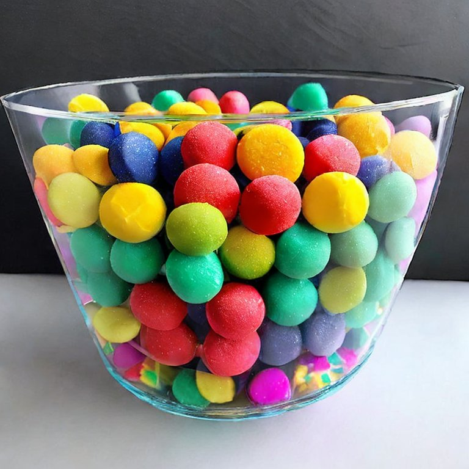
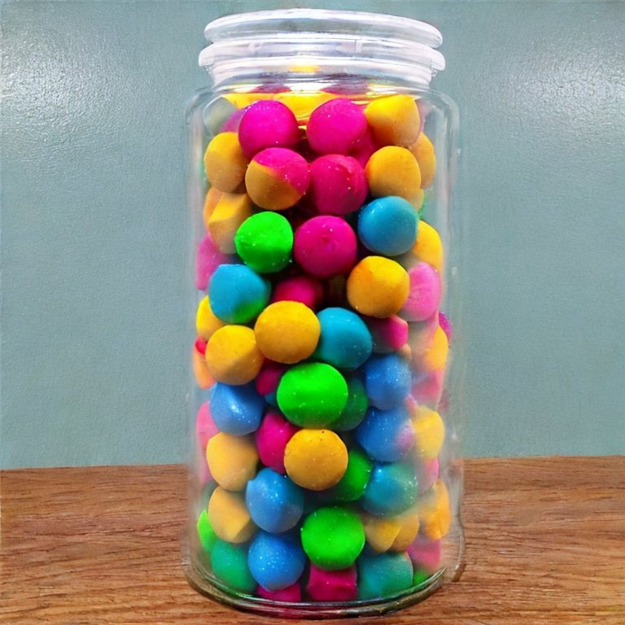
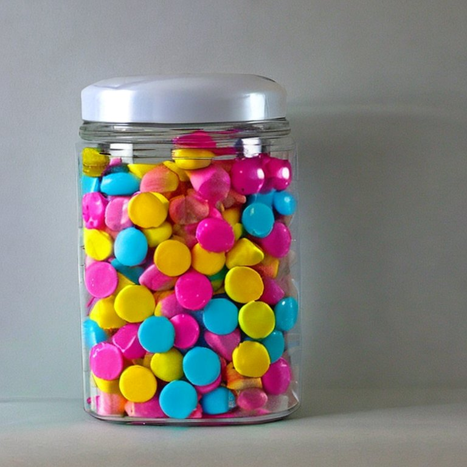
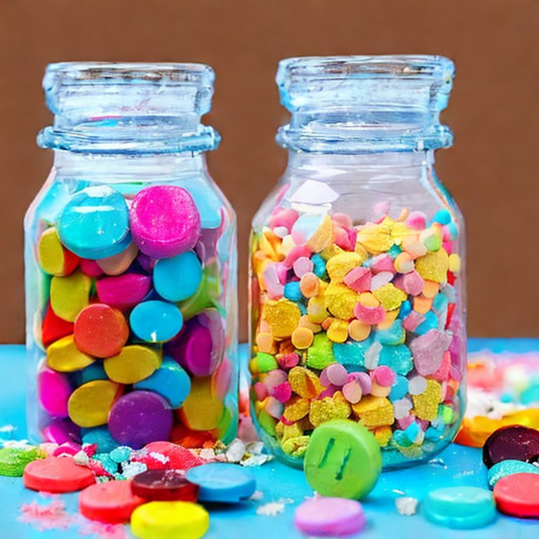
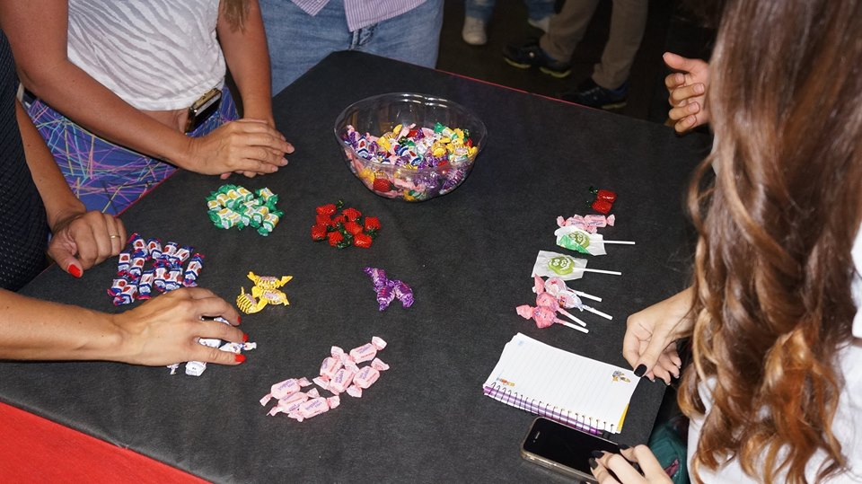

1 Quantos doces coloridos há no recipiente?
1.1 Objetivo da atividade
A atividade aborda um dos conceitos mais importantes da estatística: Estimação. O objetivo da atividade é estimar a quantidade total de balas de doce ou de uma determinada cor contidas em uma tigela ou frasco transparente. A atividade estimula o pensamento criativo do participante para realizar aproximações de quantidades.
1.2 Descrição da atividade
Número de participantes: Um ou mais participantes;
Recursos necessários: São necessários os seguintes materiais para a execução da atividade:
Uma tigela transparente ou um frasco transparente ou similar. Algumas sugestões são apresentadas na Figura 1.1;
Doces coloridos de qualquer marca e/ou sabor. A quantidade de doces pode variar dependendo do grau de dificuldade proposto para a atividade;
ImportanteA quantidade total de doces deve ser definida pelo proponente da atividade. Ressaltando que quanto maior a quantidade de doces, maior o nivel de dificuldade da atividade. Uma quantidade sugerida para a execução das atividades é uma valor próximo dos \(200\) doces. Lembre que só o proponente da atividade deve ter conhecimento das quantidades exatas de cada grupo de doces coloridos, assim como do total de doces no recipiente.
Folhas de papel A4 e lápis ou canetas. Pode ser necessário o uso de uma calculadora com funções básicas.




Procedimento: São sugeridas as seguintes atividades para execução:
Atividade 1: O intuito da atividade é estimular os participantes a estimar a quantidade total de balas contidas no recipiente. Para tal, os participantes podem aproximar a quantidade total de doces realizando, unica e exclusivamente, contato visual dos doces contidos no recipiente. No final, cada participante informará o seu palpite. Posteriormente, o proponente da atividade informará o nome do participante com o palpite mais próximo da quantidade real de doces;
AtençãoNesta atividade não é permitida a manipulação total ou parcial do conteúdo do recipiente, i.e., não é permitida a retirada dos doces para realizar contagens prévias, só é permitido qualquer esquema de visualização.
Atividade 2: Assim como a atividade anterior, o objetivo é estimar quantidade total de balas, mas dessa vez, de uma certa cor definida previamente. Mais uma vez, resulta importante que o recipiente seja transparente (vide Figura 1.1), pois assim permitirá aos participantes terem uma noção das características do conjunto de doces e concede a eles a possibilidade de adotar a melhor estratégia para atigir o objetivo. Por exemplo: Imagine que o proponente da atividade seleciona os doces da cor vermelha. Então, pode-se questionar os participantes da seguinte forma:
Quantas balas da cor vermelha têm dentro do recipiente?
Cada participante deverá propor sua própria estratégia para responder o questionamento e informar o valor do seu palpite ao proponente da atividade. No final, o mesmo informará o nome do participante com o valor mais próximo do real. Nesse caso, a criatividade dos participantes é fundamental, pois são eles que deverão estabelecer suas próprias estratégias para atingir o objetivo.
Algumas sugestões de estratégias podem variar desde uma simples visualização do conteúdo da tigela para realizar a aproximação até a retirada de uma parte dos doces utilizando as próprias mãos e realizando a contagem dos doces retirados do recipiente. Nesse caso a seleção deve ser realizada usando a medida da mão fechada. Se o participante preferir, pode repetir esse experimento quantas vezes for necessário, sendo vedada a retirada total dos doces do recipiente e/ou a retirada parcial ou total de doces de uma mesma cor.
Exemplo prático: Suponha que o participante deve estimar a quantidade total de balas de cor rosa. Caso o participante decida selecionar uma parte das balas contidas dentro do recipiente, o mesmo deverá usar a medida de uma mão fechada. Esse procedimento pode ser repetido pelo participante (vide Figura 1.2).

Figura 1.2: Seleção de balas do recipiente durante a execução da Atividade 2. Logo após, o participante deverá realizar a contagem total de balas selecionadas, classificá-las por cores e realizar a contagem da quantidade de balas rosas. O participante pode optar por calcular a proporção de balas rosas selecionadas e com essa informação poderá inferir o total de balas da cor rosa dentro do recipiente da seguinte forma: \[\text{Total balas de cor rosa} = \text{Total de balas no recipiente } \times \% \text{ de balas de cor rosa}.\]
LembreteA proporção nada mais é do que o quociente entre a quantidade de balas da cor rosa e o total de balas selecionadas.
A Figura 1.2 mostra como pode ser realizada a classificação das balas coloridas para facilitar a contagem e, assim, estimar o total dessas balas dentro do recipiente com ajuda da proporção de balas da mesma cor. Em termos mais práticos, imagine que o participante retirou \(40\) balas do recipiente e \(10\) dessas balas são de cor rosa. Assim, a proporção de balas rosas é de \(\frac{10}{40} = 0.25\). Se a quantidade total de doces no recipiente é \(200\), então a quantidade total de balas da cor rosa é \(200\times 0.25 = 50\).
Evidentemente, o participante poderá realizar alguns questionamentos do tipo:
- Será que o grupo de balas selecionado realmente representa o grupo de completo de balas no recipiente, i.e. as balas selecionadas apresenta as mesmas proporciones de balas coloridas que no recipiente completo?
- Será que a quantidade de balas selecionadas pelo participante são suficientes para obter uma boa aproximação do total?
- Quantas vezes o participante deve repetir o experimento para obter uma boa aproximação?
Os questionamentos acima não são o únicos que podem surgir. Alguns detalhes técnicos para explicar tais questionamentos são apresentados na seguinte seção.
1.3 Detalhes técnicos
1.3.1 População e Amostra
Uma população ou universo é um conjunto de pessoas, itens ou eventos sobre os quais você quer fazer inferências. Nem sempre é conveniente ou possível examinar todos os membros de uma população inteira. Por exemplo, não é viável pegar todos os eleitores brasileiros para fazer uma pesquisa eleitoral, porque o número de eleitores é muito elevado e levaria anos para entrevistar todo mundo. Além do tempo gasto, muito dinheiro seria necessário para realizar tal pesquisa.
No entanto, é possível pegar uma amostra (subconjunto da população) que seja representativa do grupo a ser pesquisado, usando dados públicos. O objetivo é escolher um número limitado de pessoas, cujas características sejam parecidas com a do grupo maior que se queira pesquisar. Para que a pesquisa esteja correta, a amostra precisa corresponder ao universo população) dentro de alguns critérios (escolaridade, idade, gênero, etc). Esses critérios são chamados de variáveis.
Uma amostra é um subconjunto de pessoas, itens ou eventos de uma população maior que você coleta e analisa para fazer inferências. Para representar a população bem, uma amostra deve ser coletada aleatoriamente e ser adequadamente grande. Se a amostra é aleatória e grande o suficiente, você pode usar as informações coletadas a partir da amostra para fazer inferências sobre a população.
1.3.2 Amostragem
Amostragem é um conjunto de técnicas utilizadas para descrever e selecionar amostras, de forma aleatória ou não, e é um fator responsável pela determinação da representatividade da amostra. Quando queremos colher informações de um ou mais aspectos de uma população grande, verifica-se, na maioria das vezes, que é praticamente impossível fazer um levantamento do todo. Assim, tem-se a necessidade de pesquisar apenas uma parte dessa populção. A amostragem se baseia, então, em escolher uma parte (amostra) da população, de tal forma que ela seja a mais representativa possível do todo e, a partir dos resultados obtidos, inferir os resultados sobre a população total.
Dentre todas as técnicas de amostragem, a mais utilizada é a Amostragem Aleatória Simples (AAS). Neste caso, todos os indivíduos da população têm a mesma chance (probabilidade) de serem escolhidos ao acaso (de forma aleatória), normalmente através de um sorteio. O sorteio é uma técnica de seleção aleatória de indivíduos, que garante a probabilidade igual para todos os elementos. Existem dois métodos dentro da AAS, que são listados abaixo:
\(\bullet\) Com reposição: o mesmo elemento da população pode ser amostrado mais de uma vez. A probabilidade de seleção não se altera.
\(\bullet\) Sem reposição: cada elemento da população é amostrado uma única vez. A probabilidade de seleção se altera.
Do ponto de vista da quantidade de informação contida na amostra, a amostragem sem reposição é mais adequada. No entanto, a amostragem com reposição conduz a um tratamento teórico mais simples, pois ele implica que tenhamos independência entre as unidades selecionadas. Portanto, na maioria dos casos de AAS, estamos nos referenciando a uma amostragem aleatória simples com reposição, que é o caso desse jogo.